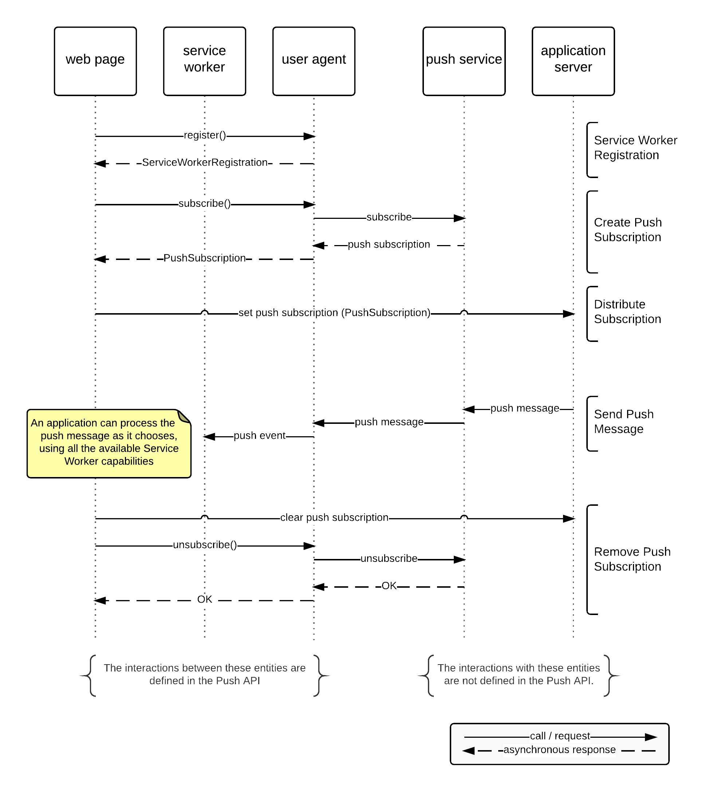

The Push API enables sending of a push message to a web application via a push service. An application server can send a push message at any time, even when a web application or user agent is inactive. The push service ensures reliable and efficient delivery to the user agent. Push messages are delivered to a Service Worker that runs in the origin of the web application, which can use the information in the message to update local state or display a notification to the user.
This specification is designed for use with the web push protocol, which describes how an application server or user agent interacts with a push service.
The Push API allows a web application to communicate with a user agent asynchronously. This allows an application server to provide the user agent with time-sensitive information whenever that information becomes known, rather than waiting for a user to open the web application.
As defined here, push services support delivery of push messages at any time.
In particular, a push message will be delivered to the web application even if that web application is not currently active in a browser window: this relates to use cases in which the user may close the web application, but still benefits from the web application being able to be restarted when a push message is received. For example, a push message might be used to inform the user of an incoming WebRTC call.
A push message can also be sent when the user agent is temporarily offline. In support of this, the push service stores messages for the user agent until the user agent becomes available. This supports use cases where a web application learns of changes that occur while a user is offline and ensures that the user agent can be provided with relevant information in a timely fashion. Push messages are stored by the push service until the user agent becomes reachable and the message can be delivered.
The Push API will also ensure reliable delivery of push messages while a user agent is actively using a web application, for instance if a user is actively using the web application or the web application is in active communication with an application server through an active worker, frame, or background window. This is not the primary use case for the Push API. A web application might choose to use the Push API for infrequent messages to avoid having to maintain constant communications with the application server.
Push messaging is best suited to occasions where there is not already an active communications channel established between the user agent and the web application. Sending push messages requires considerably more resources when compared with more direct methods of communication such as the [[Fetch|Fetch API]] or [[WebSockets]]. Push messages usually have higher latency than direct communications and they can also be subject to restrictions on use. Most push services limit the size and quantity of push messages that can be sent.
The web push protocol [[RFC8030]] describes a protocol that enables communication between a user agent or application server and a push service. Alternative protocols could be used in place of this protocol, but this specification assumes the use of this protocol; alternative protocols are expected to provide compatible semantics.
The Content-Encoding HTTP header, described in Section 8.4 of
[[RFC9110]], indicates the content coding applied to the payload of a push message.
The term application server refers to server-side components of a web application.
A push message is data sent to a web application from an application server.
A push message is delivered to the [=service worker registration/active worker=] associated with the push subscription to which the message was submitted. If the service worker is not currently running, the worker is started to enable delivery.
A declarative push message is a [=push message=] whose data is a JSON document that is understood by the user agent. A user agent opportunistically parses each incoming [=push message=] to determine if it is a [=declarative push message=] using the [=declarative push message parser=].
A [=declarative push message=] allows for the creation and display of a notification without the involvement of a service worker. Nevertheless, a service worker can still be involved if desired by the [=application server=]. In such a scenario the declarative nature of the [=push message=] serves as a backup in case the service worker was evicted due to storage pressure, for instance. And also provides a more object-oriented approach to transmitting notification data.
{
"web_push": 8030,
"notification": {
"title": "Ada emailed ‘London’",
"lang": "en-US",
"dir": "ltr",
"body": "Did you hear about the tube strikes?",
"navigate": "https://email.example/message/12"
}
}
A [=declarative push message=] has the following members:
web_push (required)
An integer that must be 8030. Used to disambiguate a [=declarative push message=] from other JSON documents.
notification (required)
A JSON object consisting of the following members, all analogous to Notifications
API features, though sometimes with a slightly stricter type. Apart from
title all members are derived from the {{NotificationOptions}}
dictionary and to be maintained in tandem. [[NOTIFICATIONS]]
title (required)
A string.
dir
"auto", "ltr", or "rtl".
lang
A string that holds a language tag.
body
A string.
navigate (required)
A string that holds a URL.
tag
A string.
image
A string that holds a URL.
icon
A string that holds a URL.
badge
A string that holds a URL.
vibrate
An array of [=/32-bit unsigned integers=].
timestamp
A [=/64-bit unsigned integer=].
renotify
A boolean.
silent
A boolean.
requireInteraction
A boolean.
This is not named require_interaction for consistency with the
{{NotificationOptions}} dictionary.
data
Any JSON value.
actions
An array of JSON objects consisting of the following members, all derived from the {{NotificationAction}} dictionary and to be maintained in tandem.
action (required)
A string.
title (required)
A string.
navigate (required)
A string that holds a URL.
icon
A string that holds a URL.
mutable
A boolean. When true causes a push event to be dispatched to a service
worker (if any) containing the {{Notification}} object described by the
declarative push message.
A declarative push message parser result is a [=/tuple=] consisting of a notification (a [=/notification=]) and a mutable (a boolean).
The declarative push message parser given a [=/byte sequence=] bytes, [=/origin=] origin, [=/URL=] baseURL, and {{EpochTimeStamp}} fallbackTimestamp runs these steps. They return failure or a [=/declarative push message parser result=].
Let message be the result of [=parse JSON bytes to an Infra value|parsing JSON bytes to an Infra value=] given bytes. If that throws an exception, then return failure.
If message is not a [=/map=], then return failure.
If message["`web_push`"] does not [=map/exist=] or is not 8030, then return failure.
If message["`notification`"] does not [=map/exist=], then return failure.
Let notificationInput be message["`notification`"].
If notificationInput is not a [=/map=], then return failure.
If notificationInput["`title`"] does not [=map/exist=] or is not a string, then return failure.
If notificationInput["`navigate`"] does not [=map/exist=] or is not a string, then return failure.
Let notificationTitle be notificationInput["`title`"].
Let notificationOptions be a {{NotificationOptions}} dictionary.
If notificationInput["`dir`"] [=map/exists=] and is "`auto`", "`ltr`", or "`rtl`", then set notificationOptions["{{NotificationOptions/dir}}"] to notificationInput["`dir`"].
If notificationInput["`lang`"] [=map/exists=] and is a string, then set notificationOptions["{{NotificationOptions/lang}}"] to notificationInput["`lang`"].
If notificationInput["`body`"] [=map/exists=] and is a string, then set notificationOptions["{{NotificationOptions/body}}"] to notificationInput["`body`"].
Set notificationOptions["{{NotificationOptions/navigate}}"] to notificationInput["`navigate`"], [=string/converted=].
If notificationInput["`tag`"] [=map/exists=] and is a string, then set notificationOptions["{{NotificationOptions/tag}}"] to notificationInput["`tag`"].
If notificationInput["`image`"] [=map/exists=] and is a string, then set notificationOptions["{{NotificationOptions/image}}"] to notificationInput["`image`"], [=string/converted=].
If notificationInput["`icon`"] [=map/exists=] and is a string, then set notificationOptions["{{NotificationOptions/icon}}"] to notificationInput["`icon`"], [=string/converted=].
If notificationInput["`badge`"] [=map/exists=] and is a string, then set notificationOptions["{{NotificationOptions/badge}}"] to notificationInput["`badge`"], [=string/converted=].
If notificationInput["`vibrate`"] [=map/exists=] and is a [=/list=] of which each [=list/item=] is a [=/32-bit unsigned integer=], then set notificationOptions["{{NotificationOptions/vibrate}}"] to notificationInput["`vibrate`"].
If notificationInput["`timestamp`"] [=map/exists=] and is a [=/64-bit unsigned integer=], then set notificationOptions["{{NotificationOptions/timestamp}}"] to notificationInput["`timestamp`"].
If notificationInput["`renotify`"] [=map/exists=] and is a boolean, then set notificationOptions["{{NotificationOptions/renotify}}"] to notificationInput["`renotify`"].
If notificationInput["`silent`"] [=map/exists=] and is a boolean, then set notificationOptions["{{NotificationOptions/silent}}"] to notificationInput["`silent`"].
If notificationInput["`requireInteraction`"] [=map/exists=] and is a boolean, then set notificationOptions["{{NotificationOptions/requireInteraction}}"] to notificationInput["`requireInteraction`"].
If notificationInput["`data`"] [=map/exists=], then set notificationOptions["{{NotificationOptions/data}}"] to the result of running convert an Infra value to a JSON-compatible JavaScript value given notificationInput["`data`"].
If notificationInput["`actions`"] [=map/exists=] and is a [=/list=]:
Let notificationActions be « ».
[=list/For each=] actionInput of notificationInput["`actions`"]:
If actionInput["`action`"] does not [=map/exist=] or is not a string, then [=iteration/continue=].
If actionInput["`title`"] does not [=map/exist=] or is not a string, then [=iteration/continue=].
If actionInput["`navigate`"] does not [=map/exist=] or is not a string, then [=iteration/continue=].
Let actionNavigate be actionInput["`navigate`"], [=string/converted=].
Let notificationAction be the {{NotificationAction}} dictionary «[ "{{NotificationAction/action}}" → actionInput["`action`"], "{{NotificationAction/title}}" → actionInput["`title`"], "{{NotificationAction/navigate}}" → actionNavigate ]».
If actionInput["`icon`"] [=map/exists=] and is a string, then set notificationAction["{{NotificationAction/icon}}"] to actionInput["`icon`"], [=string/converted=].
[=list/Append=] notificationAction to notificationActions.
Set notificationOptions["{{NotificationOptions/actions}}"] to notificationActions.
Let notification be the result of creating a notification given notificationTitle, notificationOptions, origin, baseURL, and fallbackTimestamp. If this throws an exception, then return failure.
If notification's [=notification/navigation URL=] is null, then return failure.
If the [=notification action/navigation URL=] of any [=/notification action=] of notification's [=notification/actions=] is null, then return failure.
Let mutable be false.
If message["`mutable`"] [=map/exists=] and message["`mutable`"] is a boolean, then set mutable to message["`mutable`"].
Return (notification, mutable).
A push subscription is a message delivery context established between the user agent and the push service on behalf of a web application.
A [=push subscription=] has an associated scope, which is a [=/URL=].
A [=push subscription=] is considered to have a window-accessible scope when its [=push subscription/scope=]'s [=url/path=] is a [=/list=] of [=list/size=] 1 and [=push subscription/scope=]'s [=url/path=][0] is the empty string.
I.e., the [=url/path=] component of the [=/URL=] serializes as "`/`".
A push subscription has an associated push endpoint. It MUST be the absolute URL exposed by the push service where the application server can send push messages to. A push endpoint MUST uniquely identify the push subscription.
A push subscription MAY have an associated subscription expiration time. When set, it MUST be the time, in milliseconds since 00:00:00 UTC on 1 January 1970, at which the subscription will be deactivated. The user agent SHOULD attempt to refresh the push subscription before the subscription expires.
A push subscription has internal slots for a P-256 ECDH key pair and an authentication secret in accordance with [[RFC8291]]. These slots MUST be populated when creating the push subscription.
If the user agent has to change the keys of a [=push subscription=] for any reason and the [=push subscription=]'s [=associated service worker registration=] is non-null, it MUST [=refresh=] the [=push subscription=].
To create a push subscription, given an {{PushSubscriptionOptionsInit}} |optionsDictionary:PushSubscriptionOptionsInit|:
A [=push subscription=]'s associated service worker registration is the [=service worker registration=] whose [=service worker registration/scope URL=] [=URL/equals=] the [=push subscription=]'s [=push subscription/scope=], if any; otherwise null.
A [=push subscription=]'s [=associated service worker registration=] can only be null when it has a [=push subscription/window-accessible scope=].
And vice versa, a [=service worker registration=]'s associated push subscription is the [=push subscription=] whose [=push subscription/scope=] [=URL/equals=] the [=service worker registration=]'s [=service worker registration/scope URL=], if any; otherwise null.
A user agent or push service MAY choose to refresh a push subscription whose [=associated service worker registration=] is non-null at any time, for example because it has reached a certain age.
When this happens, the user agent MUST run the steps to create a push subscription given the PushSubscriptionOptions that were provided for creating the current push subscription, and set the new [=push subscription=]'s [=push subscription/scope=] to the original subscription's [=push subscription/scope=]. The new push subscription MUST have a key pair that's different from the original subscription.
When successful, user agent then MUST fire the "`pushsubscriptionchange`" event with the service worker registration associated with the push subscription as |registration|, a {{PushSubscription}} instance representing the initial push subscription as |oldSubscription| and a {{PushSubscription}} instance representing the new push subscription as |newSubscription|.
To allow for time to propagate changes to application servers, a user agent MAY continue to accept messages for an old push subscription for a brief time after a refresh. Once messages have been received for a refreshed push subscription, any old push subscriptions MUST be deactivated.
If the user agent is not able to refresh the push subscription, it SHOULD periodically retry the refresh. When the push subscription can no longer be used, for example because it has expired, the user agent MUST fire the "`pushsubscriptionchange`" event with the service worker registration associated with the push subscription as |registration|, a {{PushSubscription}} instance representing the deactivating push subscription as |oldSubscription| and `null` as the |newSubscription|.
When a push subscription is deactivated, both the user agent and the push service MUST delete any stored copies of its details. Subsequent push messages for this push subscription MUST NOT be delivered.
A push subscription without a [=push subscription/window-accessible scope=] MUST be deactivated when its associated service worker registration is unregistered, though a push subscription MAY be deactivated earlier.
A push subscription without a [=push subscription/window-accessible scope=] is removed when service worker registration is cleared.
The term push service refers to a system that allows application servers to send push messages to a web application. A push service serves the push endpoint or endpoints for the push subscriptions it serves.
The user agent connects to the push service used to create push subscriptions. User agents MAY limit the choice of push services available. Reasons for doing so include performance-related concerns such as service availability (including whether services are blocked by firewalls in specific countries, or networks at workplaces and the like), reliability, impact on battery lifetime, and agreements to steer metadata to, or away from, specific push services.
The Push API is a [=powerful feature=] identified by the [=powerful feature/name=] "push".
For integration with the [[[Permissions]]] specification, this specification defines the {{PushPermissionDescriptor}} [=powerful feature/permission descriptor type=].
dictionary PushPermissionDescriptor : PermissionDescriptor {
boolean userVisibleOnly = false;
};
The userVisibleOnly has the same semantics as {{PushSubscriptionOptionsInit/userVisibleOnly}}.
`{name: "push", userVisibleOnly: false}` is [=PermissionDescriptor/stronger than=] `{name: "push", userVisibleOnly: true}`.
The contents of a push message are encrypted [[RFC8291]]. However, the push service is still exposed to the metadata of messages sent by an application server to a user agent over a push subscription. This includes the timing, frequency, and size of messages. Other than changing push services, which user agents may disallow, the only known mitigation is to increase the apparent message size by padding.
There is no guarantee that a push message was sent by an application server having the same origin as the web application. The application server is able to share the details necessary to use a push subscription with a third party at its own discretion.
The following requirements are intended to protect the privacy and security of the user as far as possible, and subject to meeting that goal, to protect the integrity of the application server's communication with the user.
The Push API may have to wake up the Service Worker associated with the service worker registration in order to run the developer-provided event handlers. This can cause resource usage, such as network traffic, that the user agent SHOULD attribute to the web application that created the push subscription.
The user agent MAY consider the PushSubscriptionOptions when acquiring permission or determining the permission status.
When a permission is revoked, the user agent MAY fire the "`pushsubscriptionchange`" event for subscriptions created with that permission, with the service worker registration associated with the push subscription as |registration|, a {{PushSubscription}} instance representing the push subscription as |oldSubscription|, and `null` as |newSubscription|. The user agent MUST deactivate the affected subscriptions in parallel.
The push endpoint MUST NOT expose information about the user to be derived by actors other than the push service, such as the user's device, identity or location. See the Privacy Considerations in [[RFC8030]] for the exact requirements.
The push endpoint of a deactivated push subscription MUST NOT be reused for a new push subscription. This prevents the creation of a persistent identifier that the user cannot remove. This also prevents reuse of the details of one push subscription to send push messages to another push subscription.
A push message is sent from an application server to a web application as follows:
This overall framework allows application servers to activate a Service Worker in response to events at the application server. Information about those events can be included in the push message, which allows the web application to react appropriately to those events, potentially without needing to initiate network requests.
The following code and diagram illustrate a hypothetical use of the push API.
// https://example.com/serviceworker.js
this.onpush = event => {
console.log(event.data);
// From here we can write the data to IndexedDB, send it to any open
// windows, display a notification, etc.
}
// https://example.com/webapp.js
// inside an async function...
try {
const serviceWorkerRegistration = await navigator.serviceWorker.register(
"serviceworker.js"
);
const pushSubscription = await serviceWorkerRegistration.pushManager.subscribe();
// The push subscription details needed by the application
// server are now available, and can be sent to it using,
// for example, an XMLHttpRequest.
console.log(pushSubscription.endpoint);
console.log(pushSubscription.getKey("p256dh"));
console.log(pushSubscription.getKey("auth"));
} catch (err) {
// In a production environment it might make sense to
// also report information about errors back to the
// application server.
console.log(error);
}

The fields included in the {{PushSubscription}} is all the information needed for an application server to send a push message. Push services that are compatible with the Push API provide a push endpoint that conforms to the web push protocol. These parameters and attributes include:
This specifications extends the {{Window}} and {{ServiceWorkerRegistration}} objects through the {{PushManagerAttribute}} mixin. [[HTML]] [[SERVICE-WORKERS]]
[SecureContext]
interface mixin PushManagerAttribute {
readonly attribute PushManager pushManager;
};
Window includes PushManagerAttribute;
ServiceWorkerRegistration includes PushManagerAttribute;
{{Window}} and {{ServiceWorkerRegistration}} objects have an associated {{PushManager}} object.
The pushManager getter steps are to return [=this=]'s associated {{PushManager}} object.
On a {{Window}} object the {{PushManager}}'s [=PushManager/service worker registration=] is null.
On a {{ServiceWorkerRegistration}} object the {{PushManager}}'s [=PushManager/service worker registration=] is the service worker registration represented by the {{ServiceWorkerRegistration}} object.
The {{PushManager}} interface defines the operations to access push services.
[Exposed=(Window,Worker), SecureContext]
interface PushManager {
[SameObject] static readonly attribute FrozenArray<DOMString> supportedContentEncodings;
Promise<PushSubscription> subscribe(optional PushSubscriptionOptionsInit options = {});
Promise<PushSubscription?> getSubscription();
Promise<PermissionState> permissionState(optional PushSubscriptionOptionsInit options = {});
};
A {{PushManager}} has an associated service worker registration which is null or a service worker registration.
The supportedContentEncodings attribute exposes the sequence of supported content codings that can be used to encrypt the payload of a push message. A content coding is indicated using the Content-Encoding header field when requesting the sending of a push message from the push service.
User agents MUST support the `aes128gcm` content coding defined in [[RFC8291]], and MAY support content codings defined in previous versions of the draft for compatibility reasons.
The subscribe() method steps are:
Document's [=Document/URL=].
The getSubscription() method steps are:
Document's [=Document/URL=].
The permissionState() method steps are:
Let |promise| be [=a new promise=].
Let |global| be [=this=]'s [=relevant global object=].
[=In parallel=]:
Let |state| be "`push`"'s [=permission state=].
[=Queue a global task=] on the [=networking task source=] with |global| to resolve |promise| with |state|.
Return |promise|.
Permission to use the push service can be persistent, that is, it does not need to be reconfirmed for subsequent subscriptions if a valid permission exists.
If there is a need to ask for permission, it needs to be done by invoking the {{PushManager/subscribe()}} method.
[Exposed=(Window,Worker), SecureContext]
interface PushSubscriptionOptions {
readonly attribute boolean userVisibleOnly;
[SameObject] readonly attribute ArrayBuffer? applicationServerKey;
};
The userVisibleOnly attribute, when getting, returns the value it was initialized with.
The applicationServerKey attribute, when getting, returns the value it was initialized with.
If present, the value of {{PushSubscriptionOptions/applicationServerKey}} MUST include a point on the P-256 elliptic curve [[DSS]], encoded in the uncompressed form described in [[ANSI-X9-62]] Annex A (that is, 65 octets, starting with an 0x04 octet). When provided as a {{DOMString}}, the value MUST be encoded using the base64url encoding [[RFC7515]].
User agents MAY reject a subscription attempt when {{PushSubscriptionOptions/applicationServerKey}} is not present and the push service requires one for operational reasons.
The {{PushSubscriptionOptions/applicationServerKey}} MUST be a different value to the one used for message encryption [[RFC8291]].
dictionary PushSubscriptionOptionsInit {
boolean userVisibleOnly = false;
(BufferSource or DOMString)? applicationServerKey = null;
};
The userVisibleOnly member, when set to `true`, indicates that the push subscription will only be used for push messages whose effect is made visible to the user, for example by displaying a Web Notification. [[NOTIFICATIONS]]
A PushSubscriptionOptionsInit represents additional options associated with a push subscription. The user agent MAY consider these options when requesting express permission from the user. When an option is considered, the user agent SHOULD enforce it on incoming push messages.
These options are optional, and user agents MAY choose to support only a subset of them. A user agent MUST NOT expose options that it does not support.
Once set, options for a push subscription cannot change. A pre-existing push subscription can be unsubscribed, via {{PushSubscription/unsubscribe}}, to create a push subscription with new options.
The applicationServerKey member is used by the user agent when establishing a push subscription with a push service. The {{PushSubscriptionOptions/applicationServerKey}} option includes an elliptic curve public key for an application server. This is the key that the application server will use to authenticate itself when sending push messages to this push subscription as defined in [[RFC8292]]; the push service will reject any push message unless the corresponding private key is used to generate an authentication token.
A {{PushSubscription}} object represents a push subscription.
[Exposed=(Window,Worker), SecureContext]
interface PushSubscription {
readonly attribute USVString endpoint;
readonly attribute EpochTimeStamp? expirationTime;
[SameObject] readonly attribute PushSubscriptionOptions options;
ArrayBuffer? getKey(PushEncryptionKeyName name);
Promise<boolean> unsubscribe();
PushSubscriptionJSON toJSON();
};
dictionary PushSubscriptionJSON {
USVString endpoint;
EpochTimeStamp? expirationTime = null;
record<DOMString, USVString> keys;
};
When getting the `endpoint` attribute, the user agent MUST return the push endpoint associated with the push subscription. The user agent MUST use a serialization method that does not contain input-dependent branches (that is, one that is constant time).
When getting the `expirationTime` attribute, the user agent MUST return the subscription expiration time associated with the push subscription if there is one, or `null` otherwise.
When getting the options attribute, the user agent MUST return a PushSubscriptionOptions object representing the options associated with the push subscription.
The getKey() method retrieves keying material that can be used for encrypting and authenticating messages. When {{PushSubscription/getKey()}} is invoked the following process is followed:
Keys named {{PushEncryptionKeyName/"p256dh"}} and {{PushEncryptionKeyName/"auth"}} MUST be supported, and their values MUST correspond to those necessary for the user agent to decrypt received push messages in accordance with [[RFC8291]].
The unsubscribe() method when invoked MUST run the following steps:
If the user agent failed to request the push service to deactivate the push subscription, for example because of network failures, it SHOULD retry the request to the push service for a reasonable amount of time.
The toJSON() method when invoked MUST run the following steps:
A PushSubscriptionJSON dictionary represents the JSON type of a {{PushSubscription}}. In ECMAScript this can be converted into a JSON string through the `JSON`.{{JSON/stringify()}} function.
The keys record contains an entry for each of the supported {{PushEncryptionKeyName}} entries to the URL-safe base64 encoded representation [[RFC4648]] of its value.
Note that the options to a {{PushSubscription}} are not serialized.
Encryption keys used for push message encryption are provided to a web application through the {{PushSubscription/getKey()}} method or the serializer of {{PushSubscription}}. Each key is named using a value from the {{PushEncryptionKeyName}} enumeration.
enum PushEncryptionKeyName {
"p256dh",
"auth"
};
The p256dh value is used to retrieve the P-256 ECDH Diffie-Hellman public key described in [[RFC8291]].
The auth value is used to retrieve the authentication secret described in [[RFC8291]].
[Exposed=ServiceWorker, SecureContext]
interface PushMessageData {
ArrayBuffer arrayBuffer();
Blob blob();
Uint8Array bytes();
any json();
USVString text();
};
{{PushMessageData}} objects have an associated bytes (a [=byte sequence=]), which is set on creation.
The arrayBuffer() method steps are to return an {{ArrayBuffer}} whose contents are [=this=]'s [=bytes=]. Exceptions thrown during the creation of the {{ArrayBuffer}} object are re-thrown.
The blob() method steps are to return a new {{Blob}} object whose contents are [=this=]'s [=bytes=].
The bytes() method steps are to return a new {{Uint8Array}} backed by a {{ArrayBuffer}} whose contents are [=this=]'s [=bytes=]. Exceptions thrown during the creation of the {{ArrayBuffer}} object are re-thrown.
The json() method steps are to return the result of [=parse JSON bytes to a JavaScript value|parsing JSON bytes to a JavaScript value=] given [=this=]'s [=bytes=].
The text() method steps are to return the result of running UTF-8 decode on [=this=]'s [=bytes=].
To extract a byte sequence from |object|, run these steps:
The Service Worker specification defines a {{ServiceWorkerGlobalScope}} interface [[SERVICE-WORKERS]], which this specification extends.
[Exposed=ServiceWorker, SecureContext]
partial interface ServiceWorkerGlobalScope {
attribute EventHandler onpush;
attribute EventHandler onpushsubscriptionchange;
};
The onpush attribute is an event handler IDL attribute whose corresponding event handler event type is "`push`". The "`push`" event indicates that a push message has been received for a push subscription.
The onpushsubscriptionchange attribute is an event handler IDL attribute whose corresponding event handler event type is "`pushsubscriptionchange`".
[Exposed=ServiceWorker, SecureContext]
interface PushEvent : ExtendableEvent {
constructor(DOMString type, optional PushEventInit eventInitDict = {});
readonly attribute PushMessageData? data;
readonly attribute Notification? notification;
};
dictionary PushEventInit : ExtendableEventInit {
PushMessageDataInit? data = null;
Notification? notification = null;
};
typedef (BufferSource or USVString) PushMessageDataInit;
When a constructor of the PushEvent interface, or of an interface that inherits from the PushEvent interface, is invoked, the usual event constructing steps are extended to include the following steps:
The data attribute must return the value it was initialized with.
The notification attribute must return the value it was initialized with.
When the user agent receives a push message from the push service, it MUST run the following steps.
Let |subscription| be the active push subscription corresponding to the push message.
Let |registration| be |subscription|'s [=push subscription/associated service worker registration=].
Let |bytes| be null.
If the push message contains a payload:
Decrypt the push message's payload using the private key from the key pair associated with |subscription| and the process described in [[RFC8291]]. Set |bytes| to the resulting [=/byte sequence=].
If the push message payload could not be decrypted for any reason, then [=acknowledge a push message|acknowledge=] the push message and abort these steps.
A `push` event is not fired for a push message that was not successfully decrypted using the key pair associated with the push subscription.
If |bytes| is non-null:
Let |baseURL| be |subscription|'s [=push subscription/scope=].
Let |origin| be |baseURL|'s [=url/origin=].
Let |fallbackTimestamp| be [=current coarsened wall time=].
Let |declarativeResult| be the result of running the [=/declarative push message parser=] given |bytes|, |origin|, |baseURL|, and |fallbackTimestamp|.
If |declarativeResult| is not failure:
Let |notification| be |declarativeResult|'s [=declarative push message parser result/notification=].
Set |notification|'s [=notification/service worker registration=] to |registration|.
Let |notificationShown| be false.
If |declarativeResult|'s [=declarative push message parser result/mutable=] is true and |registration| is non-null:
Let |result| be the result of [=fire a push event|firing a push event=] given |registration|, null, and a new {{Notification}} object representing |notification|.
If |result| is not failure, then set |notificationShown| to |result|'s [=push event result/notification shown=].
If |notificationShown| is false, then run the [=notification show steps=] given |notification|.
[=acknowledge a push message|Acknowledge=] the push message and abort these steps.
If |registration| is null, then abort these steps.
Let |data| be a new {{PushMessageData}} object whose [=PushMessageData/bytes=] is |bytes| if |bytes| is non-null; otherwise null.
Let |result| be the result of [=fire a push event|firing a push event=] given |registration|, |data|, and null.
If result is failure and the same push message has been delivered to a service worker registration multiple times unsuccessfully, then [=acknowledge a push message|acknowledge=] the push message.
If result is not failure, then [=acknowledge a push message|acknowledge=] the push message.
A push event result is a [=/tuple=] consisting of a notification shown (a [=/boolean=]).
To fire a push event given a [=/service worker registration=] |registration|, {{PushMessageData}} object or null |data|, and a [=/notification=] or null |notification|, run these steps. They return failure or a [=/push event result=].
Let |notificationResult| be null.
Set |registration|'s [=service worker registration/has shownotification() been successfully invoked|has `showNotification()` been successfully invoked=] to false.
Fire a functional event named "`push`" using PushEvent on |registration| with the following properties:
Then run the following steps in parallel, with |dispatchedEvent|:
Wait for all of the promises in the [=ExtendableEvent/extend lifetime promises=] of |dispatchedEvent| to resolve.
If they do not resolve successfully, then set |notificationResult| to failure.
Otherwise, set |notificationResult| to |registration|'s [=service worker registration/has shownotification() been successfully invoked|has `showNotification()` been successfully invoked=].
Wait for |notificationResult| to be non-null.
If |notificationResult| is failure, then return failure.
[=/Assert=]: |notificationResult| is a [=/boolean=].
Return (|notificationResult|).
To acknowledge a push message given a push message pushMessage means to acknowledge the receipt of pushMessage according to [[RFC8030]].
Acknowledging the push message causes the push service to stop delivering the message and to report success to the application server. This prevents the same push message from being retried by the push service indefinitely.
Acknowledging also means that an application server could incorrectly receive a delivery receipt indicating successful delivery of the push message. Therefore, multiple rejections SHOULD be permitted before acknowledging; allowing at least three attempts is recommended.
The pushsubscriptionchange event indicates a change in a push subscription that was triggered outside of the application's control, for example because it has been refreshed, revoked or lost.
To fire the "`pushsubscriptionchange`" event given a service worker registration of |registration|, |newSubscription| and |oldSubscription|, the user agent must fire a functional event named "`pushsubscriptionchange`" using PushSubscriptionChangeEvent on |registration| with the following properties:
Consider using a more reliable synchronization mechanism such as [[WEB-BACKGROUND-SYNC]] when sending the details of the new push subscription to your application server. The user might be subject to unreliable network conditions that could cause a fetch to fail.
[Exposed=ServiceWorker, SecureContext]
interface PushSubscriptionChangeEvent : ExtendableEvent {
constructor(DOMString type, optional PushSubscriptionChangeEventInit eventInitDict = {});
readonly attribute PushSubscription? newSubscription;
readonly attribute PushSubscription? oldSubscription;
};
The newSubscription attribute, when getting, returns the value it was initialized to.
The oldSubscription attribute, when getting, returns the value it was initialized to.
dictionary PushSubscriptionChangeEventInit : ExtendableEventInit {
PushSubscription newSubscription = null;
PushSubscription oldSubscription = null;
};
The newSubscription member details the push subscription that is valid per invocation of the pushsubscriptionchange event. The value will be `null` when no new push subscription could be established, for example because the web application has lost express permission.
The oldSubscription member details the push subscription that SHOULD NOT be used anymore. The value will be `null` when the user agent is not able to provide the full set of details, for example because of partial database corruption.
The Push API does not provide any means itself to present data it receives from a [=push service=]. Instead, the Push API relies on other APIs – primarily the [[[NOTIFICATIONS]]] – to present received information to an end user. As such, there are no accessibility requirements for the Push API itself. However, specifications such as [[NOTIFICATIONS]] provide guidance how to present notifications in an accessible manner.
Further, presenting an accessible interface might depend on transferring more information than a push message can convey. Push messages are best suited to carrying small amounts of content or identifiers. Any larger resources need to be fetched from servers.
This specification defines conformance criteria that apply to a single product: the user agent that implements the interfaces that it contains.
The editors would like to express their gratitude to the Mozilla and Telefónica Digital teams implementing the Firefox OS Push message solution, as well as to the following people who provided significant technical input to this document: Antonio Amaya, Miguel García Arribas, Ben Bangert, Kit Cambridge, José Manuel Cantera, JR Conlin, Albert Crespell, Matt Gaunt, Phil Jenvey, Guillermo López, Nikhil Marathe, John Mellor, Pınar Özlen, Fernando R. Sela, Shijun Sun and Doug Turner.